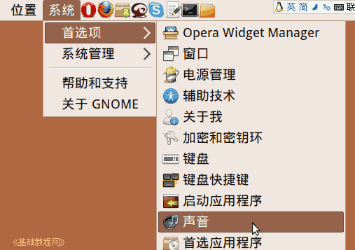
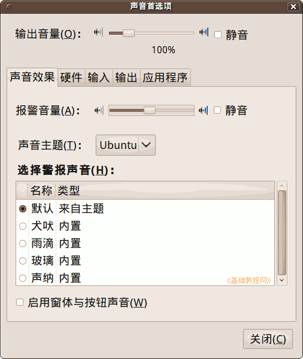
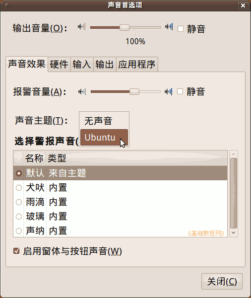
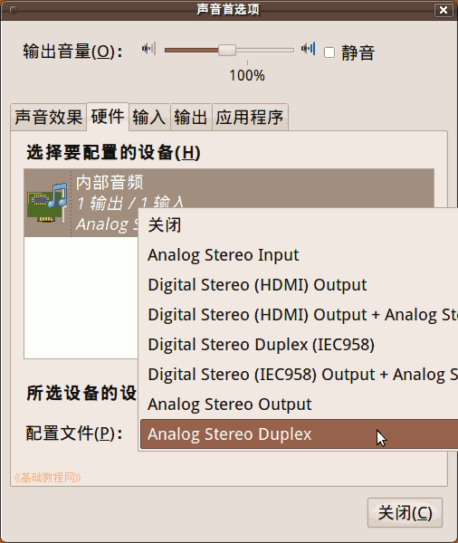
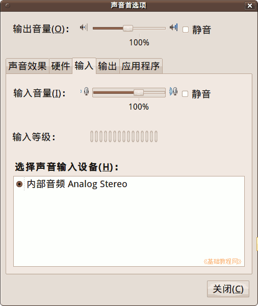
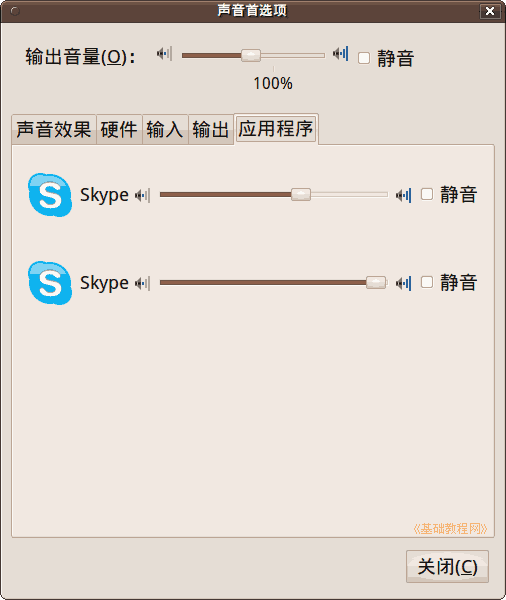

Ubuntu/GNOME 桌面程序指南
作者：TeliuTe 来源：基础教程网
二十二、声音首选项 返回目录 下一课声音首选项中，可以查看和设置声音设备和音量；
1、声音
1）点菜单“系统 - 首选项 - 声音”，打开声音首选项窗口；

2）在声音首选项面板中，上面是音量大小，中间是声音效果，硬件和正在使用声音的程序；

3）报警音是出错时的嘟嘟声，可以在下面的列表中选一个声音，也可以在主题中设置成“无声音”；

4）在硬件标签中，可以查看声卡使用的配置文件，一般不用改看一下即可；

5）在输入和输出中，可以查看使用的设备和调节音量；

6）当有程序播放或录音时，就会在“应用程序”标签中显示，可以调节它们的音量；

本节学习了声音首选项的基础知识，如果你成功地完成了练习，请继续学习下一课内容；
本教程由86团学校TeliuTe制作|著作权所有
基础教程网：http://teliute.org/
美丽的校园……
转载和引用本站内容，请保留版权信息和本站链接。